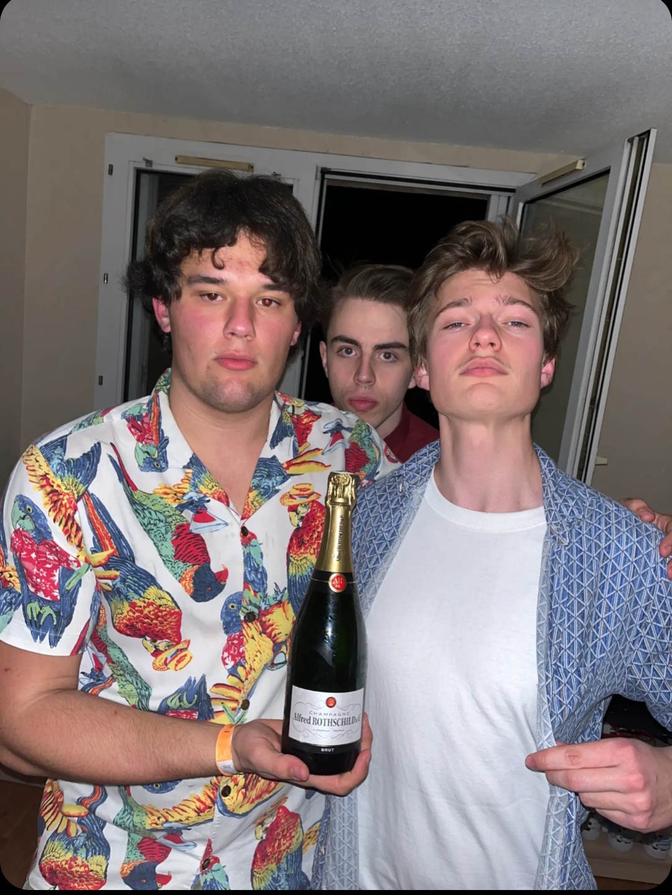

Notre histoire
Le tout a commencé le jour où, en sortant pour aller boire, des potes ont détruit des litres de spiritueux sur les carreaux du métro Toulousain. Environ 40 euros ont peut-être disparu, mais les saveurs qui se sont développés quand les différents spiritueux se sont mélangés sur le carrelage sale de la station de métro de Rangueil nous ont donné l'inspiration pour vous proposer notre menu unique.

Diégèse d'un père, 2022, Toulouse, France. © Andreas N Holmsen / Sérvice photographique NoTail
Quatre amis étaient dans le métro pour aller à un before. Ils riaient et se marraient entre eux, en tenant un gros sac en papier rempli de bouteilles de spiritueux. Le sac était lourd et humide à cause de la condensation des glaçons, mais ils ne se sont pas rendu compte; le sac se fragilisait. L'un d'entre eux passait le tourniquet, mais soudain, un bruit perçant retentit. Les bouteilles se sont écrasés l'un après l'autre, comme dans un film en ralenti, et les liquides s'étalaient dans toutes les directions. La salle du métro se remplissait rapidement par une odeur piquante, tout comme les tessons bien répartis sur le sol du métropolitain. Les observateurs regardaient les jeunes garçons avec un air désespéré, qui étaient tous choqués, les mains vides. Les dommages étaient considérables ; leur mésaventure leur a couté environ 40 euros.
La solution était simple. Ils ont fait comme tout autre groupe de camarades ; Commencer par remettre de l'ordre au métro, puis retourner à la superette. Cette fois-ci ils n'ont pas commis la même erreur, étant étudiants ingénieurs, ils ont pris un sac en plastique. Ceci est l'une des nombreux fois où les amis ont montré que tout ce qui faut, c'est de la patience, de l'expérience et un gros tas de bourses de l'état.
Un hasard ? Nous ne pensons pas. Une force divine nous a conduits vers un nouveau chemin. Un chemin remplit de cocktails.

Business, 2022, Toulouse, France. © Andreas N Holmsen / Sérvice photographique NoTail
Ensuite, le travail le plus important, immortaliser le gout du jus de métro en retrouvant les quantités exactes des meilleures matières premières, pour faire le meilleur gout de France. Notre équipe a voyagé dans toute l'Europe pour trouver les ingrédients parfaits. Un client inspiré est un client prét à acheter.
Avec des nouveaux gouts, les barmen sont rentrés, maintenant avec une vision claire sur l'organisation des 100 Tours. Ils ont pris de l'inspiration de l'expression connue : "On n'a pas besoin de se marrer pour boire". Cette expression est très visible dans la direction artistique derrière le bar. Un artiste doit vivre son propre art, et un barman doit boire ses boissons. Une pratique de dégustation de tout cocktail sortant du bar a rapidement été établie, pour assurer que le gout est parfaitement équilibré.
Mais, NoTail est bien plus que deux mecs passionnés de la consommation. C'est la cohésion, la camaraderie, l'idéologie, la politique, les maths, la physique, la chimie, l'économie, l'intégrité, le savoir-faire et toutes les autres choses que l'on ne trouve pas en école de commerce.

Mad cash, 2023, Toulouse, France. © Andreas N Holmsen / Sérvice photographique NoTail
Beaucoup de planification a été requis pour la réalisation de ce projet. Maintenant, il reste plus qu'une question. Vas-tu laisser ces mecs boire tout ça tout seul ? Une chose est sûre :
Ces jeunes hommes ont toujours quelque chose à vous proposer qui est bon à avaler.